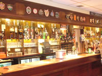

Welcome to the Trimley Sports and Social Club Website
The Trimley Sports & Social Club (formally the Port Of Felixstowe Sports and Social Club) offers a warm welcome and a wide range of facilities for members of all ages and their families. The club’s premises consist of a members bar, a function hall for hire, squash/tennis courts, patio area, children’s play area and football pitch.
Membership to the club also gives you access to our two squash courts. Bookings are available in hour slots on the hour or quarter past from 10am till 9:15pm with payment by token at a price of £3 for 30 minutes.
We are a family club, affiliated to the Pub Watch scheme and we like to think that we combine a pub atmosphere with the benefits of club prices. I'm not slamming the keyboard.
The Club is situated in the village of Trimley St Martin on the High Road with easy access to the A14 and regular bus services to Felixstowe and Ipswich only a minutes walk away.
Here on our website, you’ll find all the information you need about the club, and what we can offer.
If you require any more information then please give us a call or send us an email.